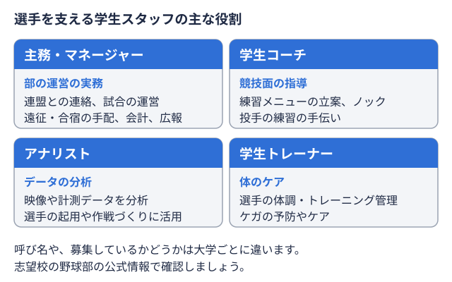

部活運営ガイド 2026-11-19
大学野球部の主務引き継ぎ、何を残す？代替わりで困らないマニュアル作成ガイド
大学野球部の主務マネージャーの代表にあたる部員。連盟や大学との連絡窓口になり、リーグ戦の運営や合宿の準備なども受け持つ。 
なぜ主務の引き継ぎは「口頭だけ」になりやすいのか
大学野球部の主務・マネージャーは、多くの部で1〜2年ごとに部員の中から選ばれて交代します。企業の総務・経理のように専任の担当者が長期間同じ業務を続けるわけではないため、引き継ぎの質がその年度以降の部の運営を大きく左右します。大学によっては、こうした代表者の役割を制度として明確に位置づけている例もあります。たとえば早稲田大学競技スポーツセンターでは、主将とともに部をまとめる主務を「代表委員」と位置づけ、新代表委員を対象にした研修会を毎年開催しているほか、手続き事項や連絡事項、書式をまとめた主務向けの事務ハンドブックを配布しています。
一方で、こうした大学側のサポートがある部でも、部内独自の運営ノウハウ（OB会との付き合い方、協賛企業への対応、遠征先の手配先リストなど）までは網羅されていないことが多く、そこは各部が自分たちでマニュアル化しておく必要があります。関西大学の体育会マニュアルでも、部員登録や退部処理、役職変更の処理など、主務が定期的に行うべき事務作業が整理されており、こうした「誰が交代しても同じ手順で進められる状態」を部内でも作っておくことが引き継ぎの質を安定させる鍵になります。
引き継ぎマニュアルに入れておきたい6つの項目
口頭での説明だけに頼らず、文書として残しておきたい項目を6つに分けて整理します。すべてを一度に完璧なマニュアルにする必要はなく、まずは箇条書きで残していくところから始めれば十分です。
① 連盟関係の手続き・年間スケジュール
部員登録、大会参加申込、審判・会場当番、年度末の報告書など、所属連盟に対して期限内に行う必要がある手続きを一覧化しておきます。提出期限を逃すと公式戦に出場できない、といった事態にもつながるため、優先度の高い項目です。新歓から引退までの大まかな年間の流れについては、大学野球部の年間カレンダー｜新歓から引退までの1年の流れと2026年の主な日程でも整理しているので、自部の連盟独自の締切と合わせてマニュアルに落とし込むとよいでしょう。
② 部員名簿・連絡網の管理
部員の学年・連絡先・緊急連絡先、既往症やアレルギーといった安全管理に関わる情報は、個人情報として慎重に扱いながらも、主務が交代してもすぐに参照できる状態で引き継ぐ必要があります。入部・退部のたびに更新するルールを決め、誰が最新版を管理しているかを明確にしておきましょう。
③ 会計・部費の記録
部費の集金方法や現金出納帳のつけ方、口座の名義・届出印の管理は、主務業務の中でも特にトラブルが起きやすい領域です。この部分だけで引き継ぎの論点が多いため、大学野球部の会計・部費管理はどうする？帳簿のつけ方と引き継ぎ・監査のコツで手順を詳しく解説しています。主務引き継ぎマニュアルには、この記事の内容に沿った運用ルールのうち自部で決めた部分（集金サイクル、承認者など）を反映させておくと実務的です。
④ 施設・遠征・道具の手配先リスト
グラウンドや体育館の予約手続き、遠征先への交通・宿泊の手配先、用具の発注先といった「誰に・どう連絡すれば動くか」という情報は、前任者の人脈に依存しやすい部分です。学内施設の予約ルールについては大学野球部の練習場所・グラウンド確保はどうする？学内施設予約のルールと外部施設活用ガイドも参考に、自部の予約担当窓口・申請フォーマットをマニュアルに添付しておきましょう。
⑤ OB会・後援会・協賛企業との付き合い方
OB会の組織や連絡先、後援会との定例の報告タイミング、協賛企業とのやり取りの経緯は、人間関係を伴う分だけ文書化が後回しにされがちな領域です。OB会との関わり方は大学野球部のOB会とは？組織の仕組みと主務・現役部員との関わり方、協賛の探し方・提案書の作り方は大学野球部が企業協賛・スポンサーを集めるには？提案書の作り方と探し方ガイドで解説しているので、あわせて参照してください。新しい協賛先を探す窓口を主務が引き継ぐ場合、学生団体・部活動向けの協賛募集情報を無料で掲載できるツナカレのようなサービスに部の情報を登録しておけば、担当者が変わっても企業側からの問い合わせの窓口が途切れにくくなります。
⑥ 公式サイト・SNSのアカウント情報
公式サイトやSNSのログイン情報、更新のルールも引き継ぎ漏れが起きやすい項目です。部に公式サイトが必要かどうかの考え方は大学野球部に公式サイトは必要？情報発信の実態とコストをかけない方法で解説しているので、運用方針を見直すタイミングで引き継ぎ資料にも反映させておきましょう。
マニュアルの作り方・保管方法
項目を洗い出したら、形式にこだわらず次のような進め方で運用していくと無理なく続けられます。
- まずは箇条書きでよい: 完璧な文書を一度に作る必要はなく、気づいたことをその都度メモに追記していく
- クラウドで共有する: Googleドライブなど、主務が交代しても引き継ぎやすい場所にファイルを置き、個人のパソコンやメールの中だけに残さない
- 引き継ぎ期間を設ける: 代替わりの直前だけでなく、新主務が決まった時点から一定期間、前任者と並行して業務にあたれる期間を確保する
- 毎年の代替わりで更新する: マニュアルは一度作って終わりではなく、新主務が気づいた変更点や抜けていた項目をその年度のうちに追記していく
代替わりの時期にやっておきたいことチェックリスト
| タイミング | やっておきたいこと |
|---|---|
| 新主務が決まった直後 | マニュアルの引き継ぎ、前任者と一定期間並行して業務にあたる期間の確保 |
| 引き継ぎ期間中 | 連盟・OB会・協賛企業など主要な関係先への顔合わせ・紹介 |
| 会計関連 | 口座の名義・届出印の変更手続き、現金出納帳データの引き継ぎ |
| アカウント関連 | 公式サイト・SNS・クラウドの共有フォルダのログイン情報の更新 |
| 引き継ぎ完了後 | マニュアルに抜けていた項目・変更点を追記し、次年度用に更新しておく |
部の「公開情報」の正確性も引き継ぎ対象に
主務の仕事には、部員名簿や会計といった内部の情報管理だけでなく、連盟の登録情報やチームとしての対外的な情報発信も含まれます。たとえば、自部が所属するリーグのスケジュールや順位表の見方を新主務自身が把握しておくことも、引き継ぎ項目の一つです。東京六大学野球 2026年秋季のチーム一覧や東都大学野球1部 2026年秋季の日程のようなデータページで、自部の試合日程や対戦成績を定期的に確認しておく習慣をつけておくと、OB会・協賛企業への活動報告や、後援会への説明資料を作る際にもすぐに数字を参照できます。主務・マネージャー業務の全体像については、大学野球部の主務・マネージャーの仕事内容とは？業務範囲と1年の動きを解説でも整理しているので、引き継ぎマニュアルの項目立ての参考にしてください。
まとめ
大学野球部の主務・マネージャーは1〜2年ごとに交代することが多く、連盟手続き・部員名簿・会計・施設手配・OB会や協賛企業との付き合い方・情報発信アカウントといった業務が、前任者の頭の中だけに蓄積されがちです。箇条書きレベルからでもマニュアルとして文書化し、クラウドで共有しながら引き継ぎ期間を設けて運用することで、担当者が変わっても一定の水準で部の運営が続けられるようになります。協賛企業との接点など、担当者が変わっても途切れさせたくない窓口については、無料で掲載できるサービスも活用しながら、引き継ぎの負担そのものを年々軽くしていくとよいでしょう。
出典
遠征費・運営資金に。協賛募集を無料掲載
部活の運営者の方へ。
部活を続けながら、就活も進めたい方へ
体育会の学生のための就活相談です。無料で、メールアドレス・学年・所属の入力だけで始められます。